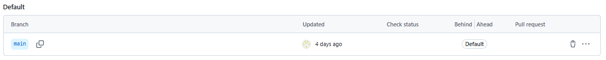
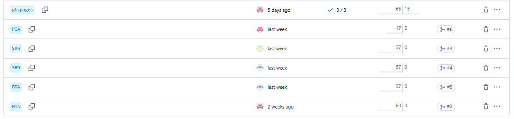

PIA - Programación de Inteligencia Artificial
Productos a entregar
- Contenedor para adquisición de datos
- Contenedor para creación, configuración y carga de datos en la BBDD relacional
- Contenedor para creación, configuración y carga de datos en la BBDD no relacional
Productos entregados
- Contenedor para adquisición de datos y subida de datos (Python + Kaggle).
- Contenedor alternativo para subida de datos (Node-red).
- Contenedor para creación, configuración y carga de datos en la BBDD relacional (Grafana).
- Contenedor para creación, configuración y carga de datos en la BBDD no relacional (InfluxDB).
Tareas de Programación de IA
1️. Creación de repositorios del reto
Descripción:
Para este proyecto se ha creado un solo repositorio y varias ramas, 1 por cada apartado.
Herramientas utilizadas:
- GitHub
- DockerHub
- KaggleHub
- VirtualBox
- Python
- Node-Red
- Grafana
- InfluxDB
Resultado:
Rama Principal:

Ramas creadas: 
2️. Scripts de generación y automatización de despliegues
Descripción:
- Script de Python inicial que llama al resto de scripts la primera vez y cada 10 minutos.
- Script de Python que se descarga de Kagglehub un dataset, lo descomprime y borra el .zip.
- 2 Scripts de Python que leen los CSVs y corrijen las columnas a sus debidas unidades.
- Script de Python que le pide a influx que cree una API token nueva de escritura.
- Script de Python que utiliza el API token para subir los datos de un CSV a influx.
Lenguajes utilizados:
- Python
- Bash
Docker Compose: El docker compose sigue estos pasos:
-
Inicia Influx.
-
Inicia Python-Kaggle y ejecuta todos los scripts en el orden anteriormente especificado.
-
Inicia Grafana.
-
Inicia Node-red.
services:
python-kaggle:
build:
context: ./subida_y_procesamiento_datos
container_name: python_kaggle_runner
depends_on:
- influxdb
volumes:
- ./subida_y_procesamiento_datos/contenido:/app/contenido
- ./kaggle.json:/root/.kaggle/kaggle.json:ro
environment:
- KAGGLE_CONFIG_DIR=/root/.kaggle
working_dir: /app
command: python contenido/actualizador.py
influxdb:
image: influxdb:2.7
container_name: influxdb
ports:
- "8086:8086"
volumes:
- influxdb_data:/var/lib/influxdb2
environment:
- DOCKER_INFLUXDB_INIT_MODE=setup
- DOCKER_INFLUXDB_INIT_USERNAME=cryptobro
- DOCKER_INFLUXDB_INIT_PASSWORD=criptobro12345
- DOCKER_INFLUXDB_INIT_ORG=Cryptobro_Together_Strong
- DOCKER_INFLUXDB_INIT_BUCKET=livemarket
- DOCKER_INFLUXDB_INIT_RETENTION=365d
- DOCKER_INFLUXDB_INIT_ADMIN_TOKEN=solo_para_cryptobros
grafana:
image: grafana/grafana:latest
container_name: grafana
depends_on:
- python-kaggle
ports:
- "3000:3000"
volumes:
- ./subida_y_procesamiento_datos/contenido/grafana_dashboard:/etc/grafana/provisioning/dashboards
- ./subida_y_procesamiento_datos/contenido/grafana_datasource:/etc/grafana/provisioning/datasources
- grafana-storage:/var/lib/grafana
environment:
- GF_SECURITY_ADMIN_USER=admin
- GF_SECURITY_ADMIN_PASSWORD=admin
restart: unless-stopped
nodered:
image: nodered/node-red:latest
container_name: nodered
build:
context: ./subida_y_procesamiento_datos/contenido/nodered_data
depends_on:
- python-kaggle
ports:
- "1880:1880"
volumes:
- ./subida_y_procesamiento_datos/contenido/nodered_data:/data
volumes:
influxdb_data:
grafana-storage:
nodered_data: